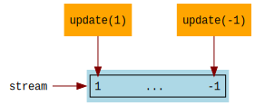
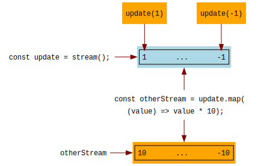
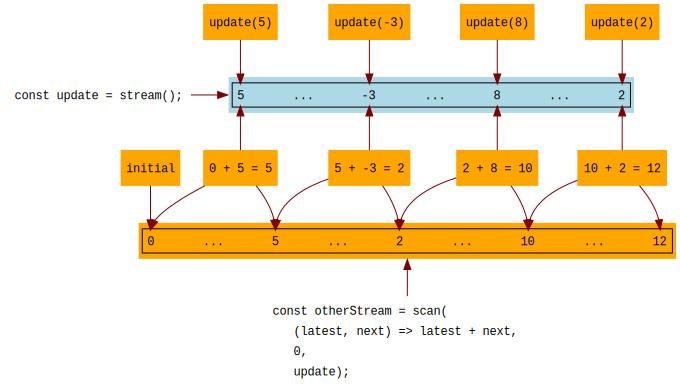

In the previous lesson, Initial State and Actions, we
created an increment function to update the application state. The function changed the state by
directly modifying a global variable.
This works, but we can improve the approach. Namely, we'd like to gain more control over the flow of data and how we make changes to the state. We can do this by using a stream. A stream is a nice and simple way to communicate values and to control data flow.
If you already know about streams and are comfortable with them, great. But, if you have glanced at streams elsewhere and found them overly complicated, please forget all of that because the streams that we use here are very simple. In fact, we only use two stream operators,
mapandscan, and only to set up the Meiosis pattern at the starting point of the application.
A stream is a sequence of values, similar to an array. You can send values onto a stream. You can also have functions that get called every time a value arrives on the stream.
Let's say we create a stream called update. When we call update(1), update(-1), and so on,
these values will be in a stream.

We can pass values, objects, and even functions onto a stream.
mapThe way to do something with the values that arrive on the stream is by calling map. We pass a
function as a parameter to map, and that function gets called every time a new value arrives
onto the stream. The result of calling map is a new stream with the values returned by
the function.

Although map produces a new stream, we don't always need it. The function that we pass may not
return anything that we need to use. We can also use map to do something with the values (also
known as side effects).
We will use flyd as our stream library. You can also use another stream library simply by using its equivalents of:
mapscan, which we will look at later on in this lesson.To create a stream with flyd, we simply call flyd.stream():
const update = flyd.stream();
To push a value onto the stream, we call it as a function and pass the value:
update(1);
To get the latest value from a stream, we call it as a function with no parameters:
const value = update();
// value is 1
We can call map on the created stream, passing a function that will get called for every value
that arrives onto the stream. The call to map returns a new stream.
// otherStream is every value from the update stream plus ten
const otherStream = update.map((value) => value + 10);
// display every value from the otherStream onto console.log
// here we are doing something with every value, but not returning anything.
// we are also ignoring the stream returned by otherStream.map(...).
otherStream.map((value) => {
console.log(value);
});
I invite you to get familiar with streams. Using the code box below, which has flyd already
loaded, try the exercises.
update stream.timesTen stream that is the result of multiplying by ten each value from the
update stream.plusTwo stream that is the result of adding two to each value from the
timesTen stream.plusTwo stream that outputs each value using console.log.update(1) and update(2) and seeing
12 and 22 on the console log.scanThe other stream function that we'll use is called scan. Stream libraries have a number of other
functions (also called operators), ranging from a handful to an overwhelming amount! But, we
only need map and scan, and we only need them to set up the Meiosis pattern.
Like map, scan takes a source stream and produces a new stream. Remember that with map,
whenever a new value arrives on the source stream, the function that we passed to map gets called,
and the result is the next value on the new stream.
With scan, instead of passing a function of one parameter, we pass a function of two
parameters. This function is called an accumulator.
When a new value arrives on the source stream, the accumulator function gets called with the latest result that we returned, and the incoming value from the source stream. The result that we return from the accumulator function is the next value on the new stream, and it also becomes the latest result.
Finally, since at first there is no latest result, we pass to scan an initial value, which
becomes starting point for the latest result, and the first value on the new stream.
Let's look at an example. Say we start with an update stream:
const update = flyd.stream();
Next, we create an otherStream with scan:
const otherStream = flyd.scan((latest, next) => latest + next, 0, update);
As you can see, we need to pass three parameters to scan:
update to the
latest value.0. So, otherStream will start with a value of 0.update.If we call update(5), the next value on otherStream will be 0 + 5 = 5. If we then call
update(-3), now the latest value is 5, the next value is -3, and the result is 5 + -3 = 2.
The sequence continues, always adding the incoming value to the latest result, as illustrated below:

scanNow that have we streams, map, and scan, we can use them to manage our application state.
Previously, we had:
const initial = {
value: 0
};
const actions => {
increment: () => {
initial.value = initial.value + 1;
}
};
We can incorporate streams to manage the flow of data:
update stream, and pass it to the functions in our actions object.update stream, indicating a state change.
We'll call this a patch. In our example, the patches are numbers by which to increment the value
of the counter.scan, we create a stream of states, starting with the initial state and incrementing the
counter by the values coming in on the update stream.map, we'll display the latest state.Here are our changes:
const actions = {
increment: (update) => {
update(1);
},
decrement: (update) => {
update(-1);
}
};
const app = {
initial: {
value: 0
}
};
const update = flyd.stream();
const states = flyd.scan(
(state, increment) => {
state.value = state.value + increment;
return state;
},
app.initial,
update
);
states.map((state) => {
document.write("<pre>" + JSON.stringify(state) + "</pre>");
});
The states stream starts with the initial state, { value: 0 }. Every time a number arrives onto
the update stream, the accumulator function adds that number to state.value. We have a stream of
states, and the actions can change the value by pushing a patch (in this case, a number) onto the
update stream.
Putting it all together, we have the complete example as shown below.
Try it out: notice that {"value":0} appears in the output on the right. This is our initial state.
Now, within the console, type and then press Enter:
actions.increment(update)
In the output on the right, you will see {"value":1} appear, showing that the state has been
updated. Try actions.increment(update) again and also actions.decrement(update).
We are starting to implement the Meiosis pattern:
update streamupdate streamstates stream that scans the update stream, starting with an initial state and applying
patches to the state with an accumulator functionmap on the states stream to display the stream of states.You've probably noticed that our patches and our accumulator function are pretty limited. Indeed, our patches are just numbers, and all the accumulator function does is add the number to the state value. In the upcoming sections, we will look at more general-purpose patches and accumulator functions, fully implementing the Meiosis pattern in the process.
A Note about Using Mithril Streams: if you're using Mithril as a view library, you can use Mithril Stream as a stream library. For our purposes, it works just like
flyd. The only difference is that you callm.stream()instead offlyd.stream(), andm.stream.scaninstead offlyd.scan.
When you are ready, continue on to Meiosis with Function Patches.